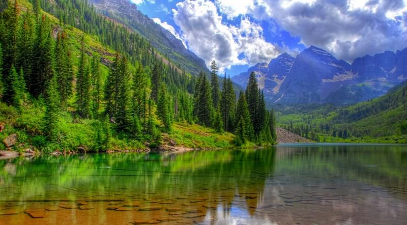

HOME
1.Baikal Lake

The Committee inscribed Lake Baikal as the most outstanding example of
a freshwater ecosystem on the basis of natrual criteria (vii), (viii), (ix) and (x).
It is the oldest and deepest of the world´s lakes containing nearly 20% of the
world´s unfrozen freshwater reserve. The lake contains an outstanding variety of
endemic flora and fauna, which is of exceptional value to evolutionary science.
It is also surrounded by a system of protected areas that have high scenic and
other natural values. The Committee took note of the confirmation of the revised
boundaries of the site, which correspond to the core areas defined in the Baikal
Law (excluding the five urban developed areas). It also noted that the special Lake
Baikal Law is now in its second reading in the Duma. Finally, it noted concern over
a number of integrity issues including pollution, which should be brought to the attention
of the Russian authorities.

2.Zhangjiajie National Forest Park,China

Zhangjiajie National Forest Park was the first national forest park in China,
listed as UNESCO World Heritage Site in 1992. It is also famous for the inspiration
for the movie AVATAR, the Hallelujah Mountain.Zhangjiajie National Forest Park is
the first national forest park in China. It is noted for morethan 3000 quartzite sandstone
pillars and peaks with striking beauty of landscape.